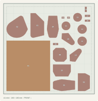
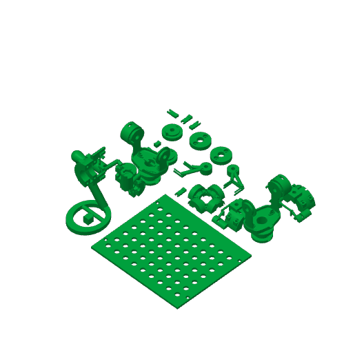

A0120 件
头颈与背盒盖


展开 20 件零件清单
| 图号 | 零件 / 所属位置 | 数量 |
|---|---|---|
| 01 | X081o22/controller_lid | 1 |
| 02 | X050frame/head | 1 |
| 03 | P035head/C14 | 1 |
| 04 | P033head/C01 | 1 |
| 05 | P034head/C02 | 1 |
| 06 | X045head/P_case_plus | 1 |
| 07 | X049head/D_case_plus | 1 |
| 08 | P036head/C15 | 1 |
| 09 | X005head/C01_sensor_cassette | 1 |
| 10 | X006head/C02_sensor_cassette | 1 |
| 11 | P040head/P_magnet_cap | 1 |
| 12 | P045head/D_magnet_cap | 1 |
| 13 | N003head/C01_magnet_cartridge | 1 |
| 14 | N003head/C02_magnet_cartridge | 1 |
| 15 | X043head/P_pcb_clip_-14 | 1 |
| 16 | X044head/P_pcb_clip_+14 | 1 |
| 17 | X047head/D_pcb_clip_-14 | 1 |
| 18 | X048head/D_pcb_clip_+14 | 1 |
| 19 | P039head/P_radial_pad | 1 |
| 20 | P044head/D_radial_pad | 1 |